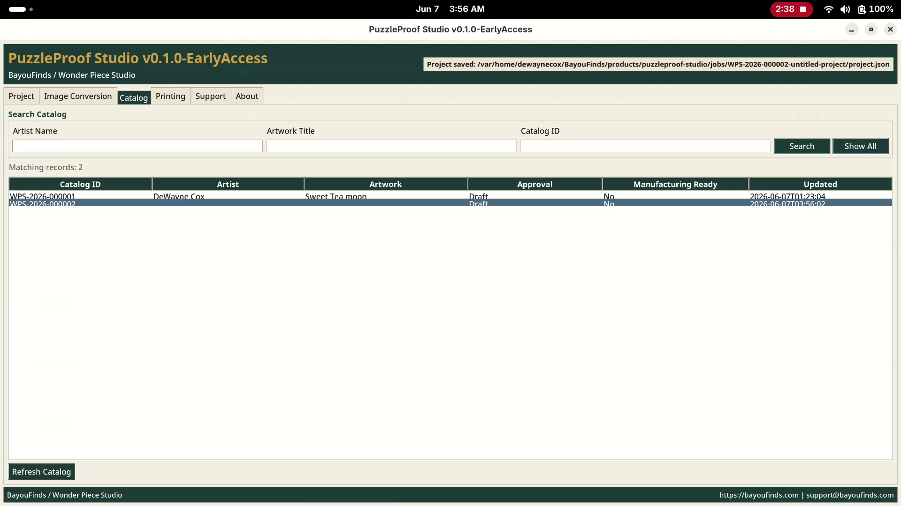
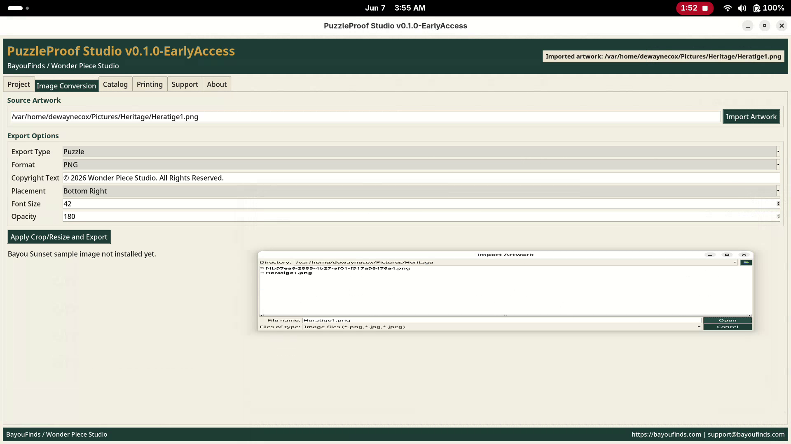
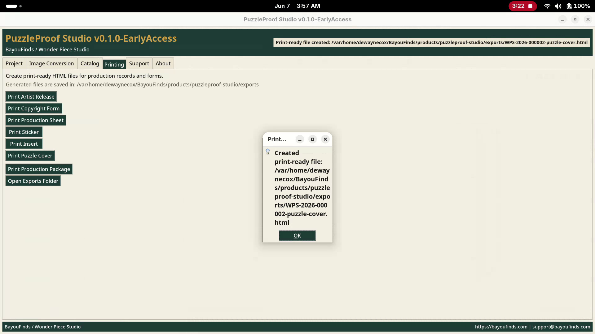
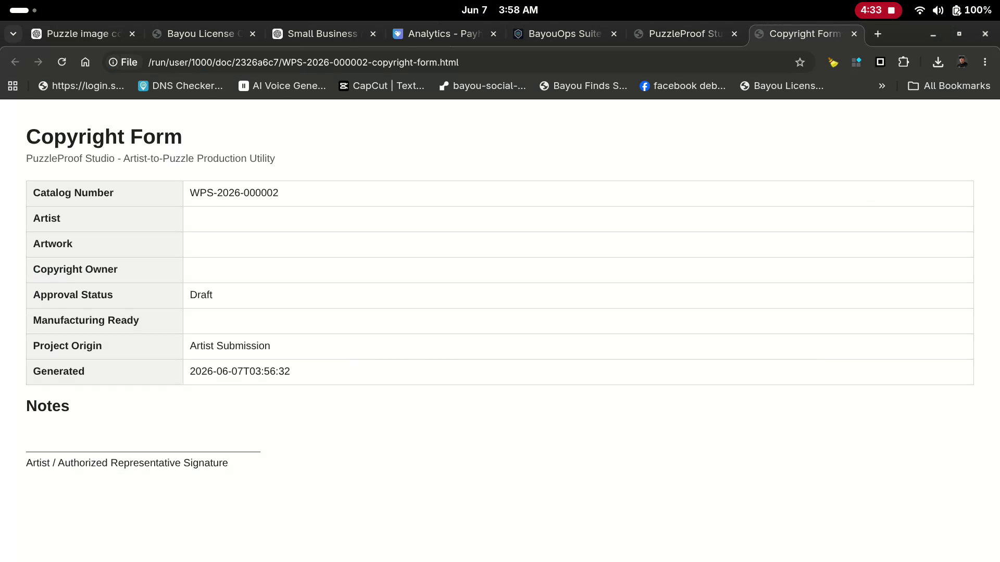
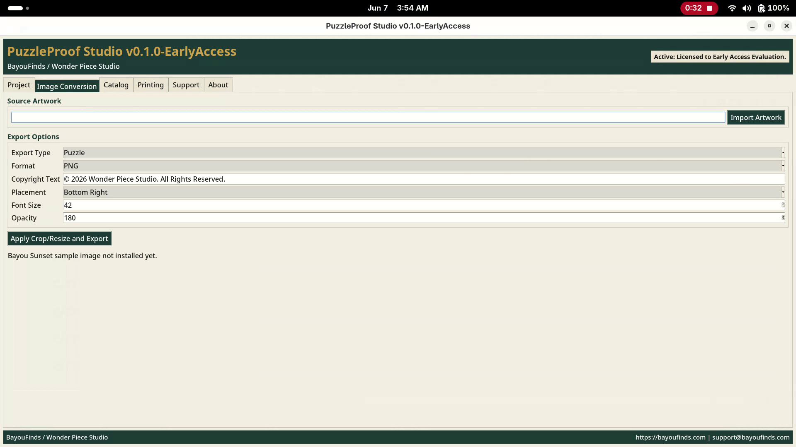

Puzzle Print presets
Generate the production-size puzzle print output from the customer image.
Early Access Program
Current Build: v0.1.2
Production software for custom puzzle makers
Turn one customer image into print-ready puzzle production assets in minutes.
PuzzleProof Studio helps custom puzzle makers generate Puzzle Print, Box Insert, and Box Sticker / Label outputs from a single image while reducing manual resizing, cropping, and setup work.

Built from real production work
Built using real-world production workflows and refined through active testing with custom puzzle makers.
What it does
Designed for small puzzle businesses, custom gift makers, and production shops looking to simplify image preparation before printing.
Generate the production-size puzzle print output from the customer image.
Create the customer insert asset without manual layout setup.
Create the packaging sticker or label output for the order.
Export Word-compatible files for users comfortable printing from DOCX.
Save direct image outputs for print-ready production workflows.
Find saved files quickly after export.
See suggested printer guidance for each production output.
Product screenshots
Screenshots from the current Early Access workflow.






Built from real workflow
Wonder Piece Studio beta testing with Sean Watkins showed the real problem: Microsoft Word was being used as a manual workaround, not because Word was required.
The customer pain point was repeated image resizing, cropping, and positioning for each order. PuzzleProof Studio focuses on automating those production presets and reducing setup time.
Designed to reduce repetitive image preparation before production printing.
Download / Early Access
Current Build: v0.1.2
This early-access build is ready for Windows customer validation. It is intended for real production workflow testing with small puzzle makers and production partners.
FAQ
No. The Windows customer package includes the app and runtime needed to launch it.
Yes. The current early-access package is prepared for Windows customer validation.
Yes. DOCX export is supported for users comfortable printing from Word.
It is in early access testing for production workflows. Validate outputs with your printer, materials, and process before relying on it for customer orders.
Contact
Questions about early access, production workflow testing, or support? Contact BayouFinds / Wonder Piece Studio.